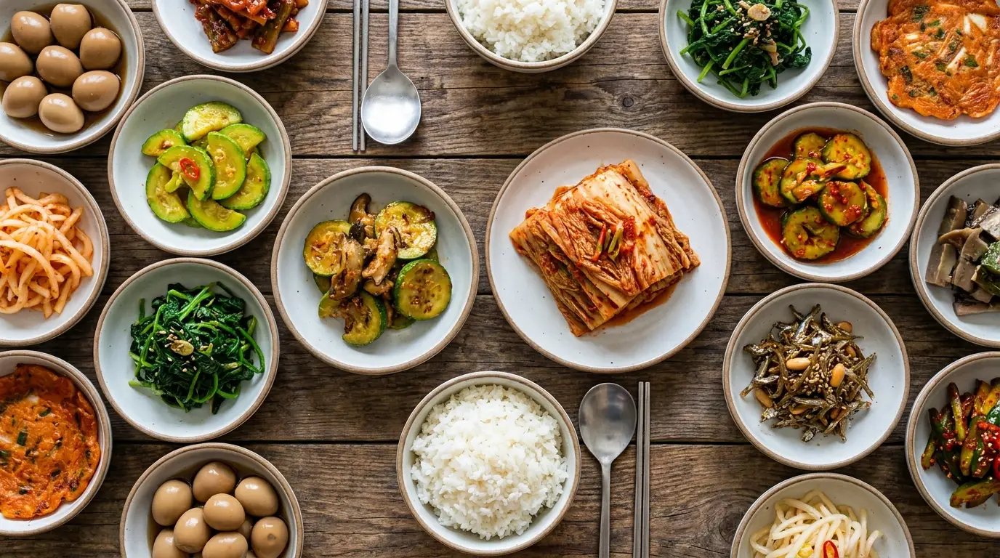

Le kimchi : la vraie recette, et pourquoi ce n'est pas un plat

Onze recettes de ce blog mentionnent le kimchi. Aucune n'expliquait comment le faire. Voici la recette, et surtout les deux ou trois gestes qui font la différence entre un vrai kimchi et du chou pimenté.
C'est le paradoxe de la cuisine coréenne : tout le monde connaît le mot, presque personne ne sait ce qu'il désigne vraiment. Le 김치 gim-tchi n'est pas un plat. C'est une méthode — saler un légume, l'enrober d'une pâte pimentée, le laisser fermenter — appliquée à des dizaines de légumes différents. On en recense plus de deux cents variétés.
Celui que tu as en tête, le rouge, au chou, s'appelle le baechu-kimchi. C'est le plus courant, et c'est celui qu'on fait ici.
Ce que le kimchi est vraiment
Il n'accompagne pas le repas : il en fait partie. Un repas coréen ordinaire, c'est du riz, une soupe, et plusieurs petits plats posés au milieu de la table dans lesquels tout le monde pioche. Le kimchi est celui qui ne manque jamais.
Le geste collectif qui consiste à en préparer d'énormes quantités à l'entrée de l'hiver porte un nom : le 김장 gim-djang. Familles et voisins se réunissent sur un ou deux jours, préparent de quoi tenir jusqu'au printemps, et se répartissent les jarres. L'UNESCO l'a inscrit en 2013 sur la liste représentative du patrimoine culturel immatériel — non pas pour la recette, mais pour ce qu'elle organise entre les gens.
Avant les réfrigérateurs, le kimchi passait l'hiver dans des jarres de terre, les 항아리 hang-a-ri, enterrées dans la cour : la terre tenait une température stable, autour de zéro. Le réfrigérateur à kimchi vendu aujourd'hui dans tous les foyers coréens ne fait rien d'autre que reproduire ce comportement.
Les ingrédients, et lesquels ne se remplacent pas
| Ingrédient | Coréen | Remplaçable ? |
|---|---|---|
| Chou chinois | 배추 bè-tchou | Chou pointu à la rigueur — le goût change |
| Gros sel | 소금 so-geum | Gros sel de mer, jamais du sel fin iodé |
| Piment en poudre | 고춧가루 go-tchout-ga-rou | Non. Voir plus bas |
| Ail | 마늘 ma-neul | Non — et il en faut beaucoup |
| Gingembre | 생강 sèng-gang | Frais uniquement |
| Radis blanc | 무 mou | Daikon, facile à trouver |
| Saumure de poisson | 젓갈 djot-gal | Sauce de poisson, ou rien (version végétale) |
La recette, étape par étape
1. Saler le chou — l'étape que tout le monde bâcle
Coupe le chou en quatre dans la longueur. Écarte les feuilles et sale généreusement entre chacune, en insistant sur la base, plus épaisse. Laisse reposer deux à quatre heures en retournant les quartiers à mi-parcours.
Le chou doit devenir souple : une feuille de la partie blanche doit plier sans casser. S'il casse encore, il n'est pas prêt. C'est ici que se joue la réussite — un chou insuffisamment salé rendra son eau plus tard et diluera tout.
Rince ensuite abondamment, trois fois, et laisse égoutter au moins trente minutes.
2. La pâte
Mixe l'ail, le gingembre, un peu d'oignon et la saumure de poisson. Ajoute le piment en poudre et mélange jusqu'à obtenir une pâte homogène. Beaucoup de recettes coréennes y incorporent une bouillie de farine de riz refroidie : elle fait tenir la pâte sur les feuilles et donne à la fermentation de quoi démarrer.
Ajoute le radis taillé en fins bâtonnets et de la ciboule coupée en tronçons.
3. Enrober
Avec des gants — le piment reste sur les mains bien plus longtemps qu'on ne le croit —, enduis chaque feuille de pâte, une par une. Replie le quartier sur lui-même et tasse-le dans un bocal.
Ne remplis jamais jusqu'en haut : laisse au moins trois centimètres. La fermentation produit du gaz, et un bocal trop plein déborde.
4. Fermenter
Laisse le bocal un à deux jours à température ambiante, puis mets-le au réfrigérateur. Le premier jour, tu verras de petites bulles remonter : c'est le signe que ça marche.
Les quatre erreurs classiques
- Du sel fin iodé. Il sale trop vite, en surface, et laisse un arrière-goût. Gros sel uniquement.
- Un rinçage insuffisant. Le kimchi sera immangeable de sel, et rien ne rattrape ça.
- Un bocal hermétique rempli à ras bord. La pression monte. Ouvre-le une fois par jour les deux premiers jours.
- Le jeter parce qu'il est devenu acide. C'est l'inverse : le kimchi vieux est le meilleur pour cuisiner.
Que faire du kimchi trop vieux
Un kimchi de deux mois est trop acide pour être mangé tel quel — et c'est exactement à ce moment qu'il devient un ingrédient. Les Coréens ne cuisinent jamais avec du kimchi jeune : ils attendent qu'il ait tourné.
Un mot sur le kkakdugi
Si le chou t'intimide, commence par le 깍두기 kkak-dou-gi : le même principe appliqué au radis, coupé en cubes. Pas de feuilles à enduire une par une, pas de salage délicat. C'est le kimchi qu'on apprend en premier, et il accompagne traditionnellement les soupes.